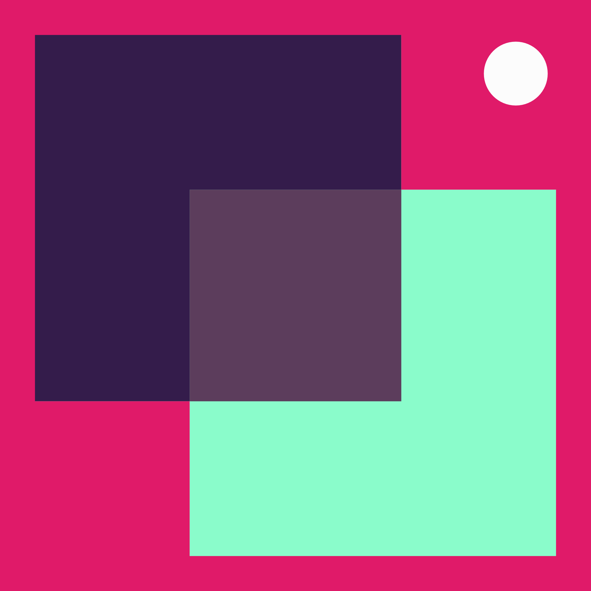

Tapahtumien oma alusta on nyt täällä!
CampusSquare tuo kaikki tapahtumat yhdelle alustalle. Alusta kokoaa yhteen juhlat, työpajat, kampuksella järjestettävät tapahtumat sekä muut tekemiset. Taustalla on opiskelijoiden arjesta kerätty tieto siitä, että sama ongelma toistuu kerta toisensa jälkeen: tieto siitä, mitä kampuksella tapahtuu ja mitä opiskelijatapahtumia on luvassa, on hajallaan.
Kaikki tapahtumat yhdessä paikassa
CampusSquaressa näkyy opiskelijajärjestöjen, koulun virallisten tahojen sekä opiskelijoiden järjestämät tapahtumat ja tekemiset. Suodatus toimii kiinnostuksen mukaan, jolloin käyttäjä voi suodattaa tapahtumia omien mieltymystyen mukaan.
"Halusimme ratkaista sen, että moni ei edes tiedä mitä on tarjolla"
kertoo yksi alustan kehittäjistä.
Squaressa voit myös tarkastella omaa lukujärjestystäsi ja valita tapahtumia ottaen huomioon päällekkäisyydet kurssien kanssa. CampusSquare tukee osaltaan Haaga-Helian strategian tavoitetta rakentaa hyvinvoivaa, välittävää yhteisöä.
Aktivoidu CampusSquaressa jo tänään
CampusSquare on nyt liitetty osaksi CampusConnectia. Löydät sen CampusConnectin etusivulta alla olevan kuvakkeen takaa.

Monta kätevää toimintoa
- Mitä kampuksella tapahtuu tänään?
- Ilmoittaudu osallistuvasi tapahtumaan tai aktiviteettiin
- Näytä kiinnostuksesi tykkäämällä ja jätä osallistuminen myöhemmälle
- Tarkastele tapahtumien ja oman kalenterisi päällekkäisyyksiä
- Anna palautetta suoraan tapahtuman järjestäjälle
"Tätä olen kaivannut!"
iloitsee eräs opiskelija.